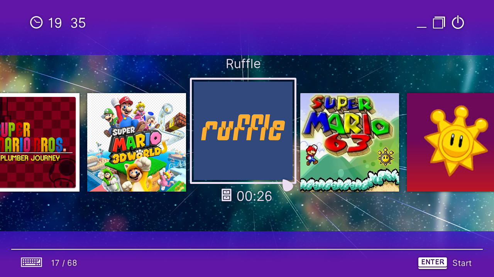

SMG1+2 for Ninty
The Super Mario Galaxy Movie公開記念
Super Mario Galaxy 1+2 [ コースセレクト画面風 ]
The Super Mario Galaxy Movie公開記念ということで、
Ninty Launcher上で動作するスーパーマリオギャラクシーのコースセレクト画面のような
カスタムテーマを作ってみました！
スーパーマリオギャラクシーのほかにスーパーマリオギャラクシー２風のものも用意しています！
色はSMGの[青/紫/赤]の3色とSMG2の[紫/赤]の2色で合計5色です！
それぞれコースセレクトのBGMも再生されるようにしておきました！
試しに入れてみては？